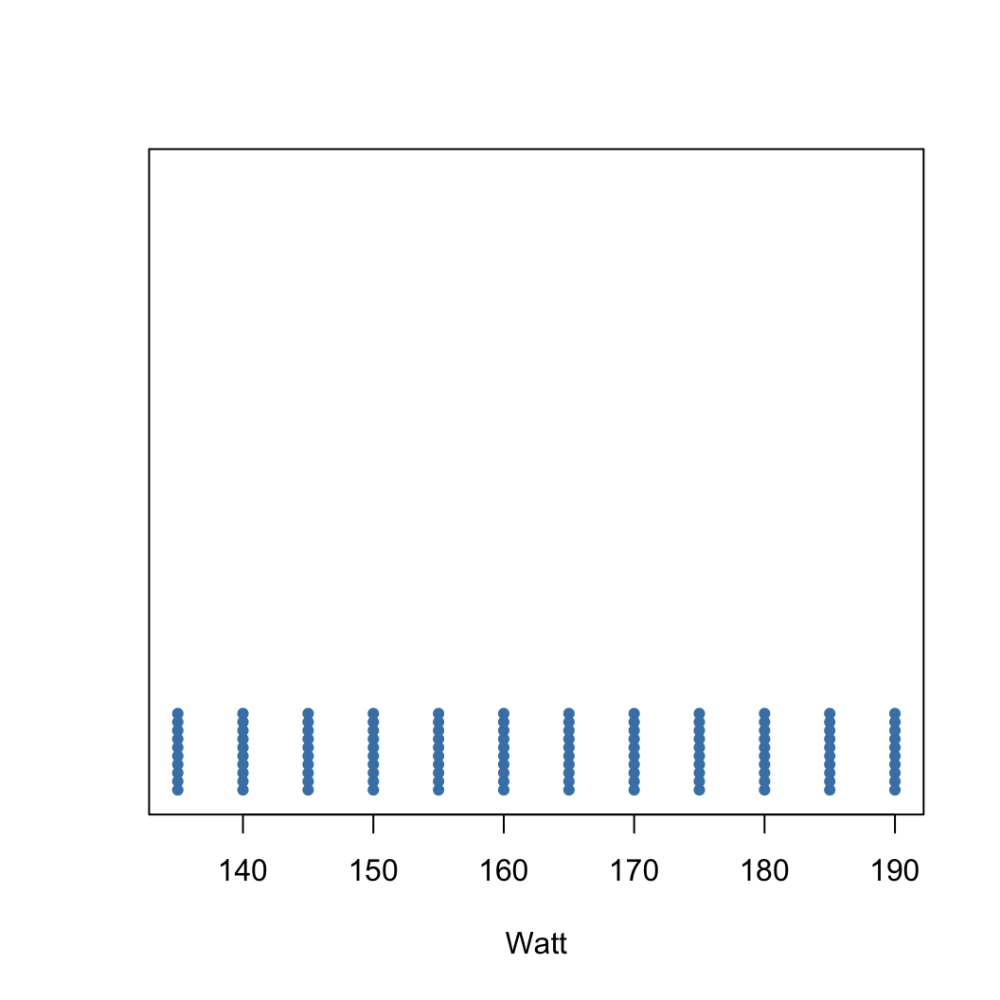
ST201 Data Analysis
Numerical Data
🚴 Watt Test Challenge: 7 Rounds! 🚴
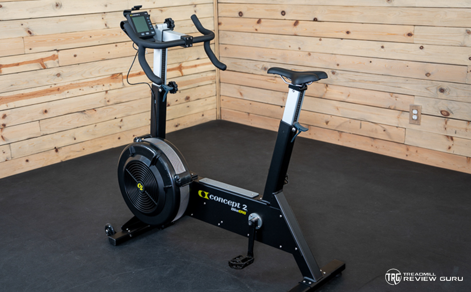
🏋️♂️ Goal: Achieve an average of 160 watts
⏲️ Time: 2 minutes per round
💡 Pro Tip: Adjust the resistance to push your wattage higher!
The Average (Mean)
The mean, often called the average, is a common way to measure the center of a distribution of data. For example, assume we have a watt value every second over a two minute period. To compute the mean watt value, we add up all the watt values and divide by 120.
The Sample Mean
- Description: a central value in a set of numbers.
- Formula: the sum of all values divided by the total number of values.
Notation
\(\bar{x}\)
\(\bar{x} = \frac{1}{n}\sum_{i=1}^n x_i\)
For the 🚴 Watt Test 🚴 we know what we want the mean to be e.g., 160.
🤔 Consider how many different ways we can generate that mean value in a two minute interval.
Visualisation - Dot plots
A dot plot provides the most basic of displays when we are interested in the distribution of a single variable.
- A dot plot is a one-variable scatterplot;
- an example using 120 watt values is shown:
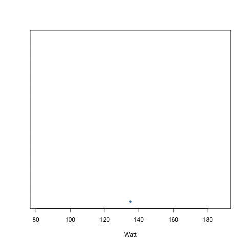
Visualisation - Dot plots
A dot plot provides the most basic of displays when we are interested in the distribution of a single variable.
- A dot plot is a one-variable scatterplot;
- an example using 120 watt values is shown:
Visualisation - Dot plots
We could achieve a similar average in a different way:
Visualisation - Dot plots
We could achieve a similar average in a different way:
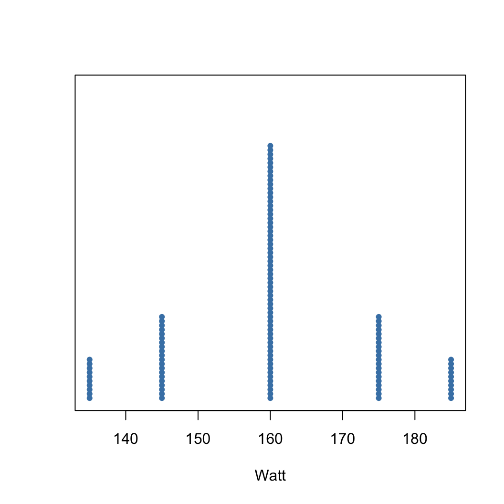
Scatter Plots
We could also consider visualising two variables here as a scatter plot if we include the time aspect.
Consider the following strategy:
- get a 160 watt average in a 2 minute interval
- have a steady increase every 10 seconds
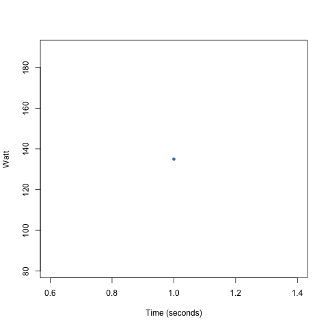
Scatter Plots
We could also consider visualising two variables here as a scatter plot if we include the time aspect.
Consider the following strategy:
- get a 160 watt average in a 2 minute interval
- have a steady increase every 10 seconds
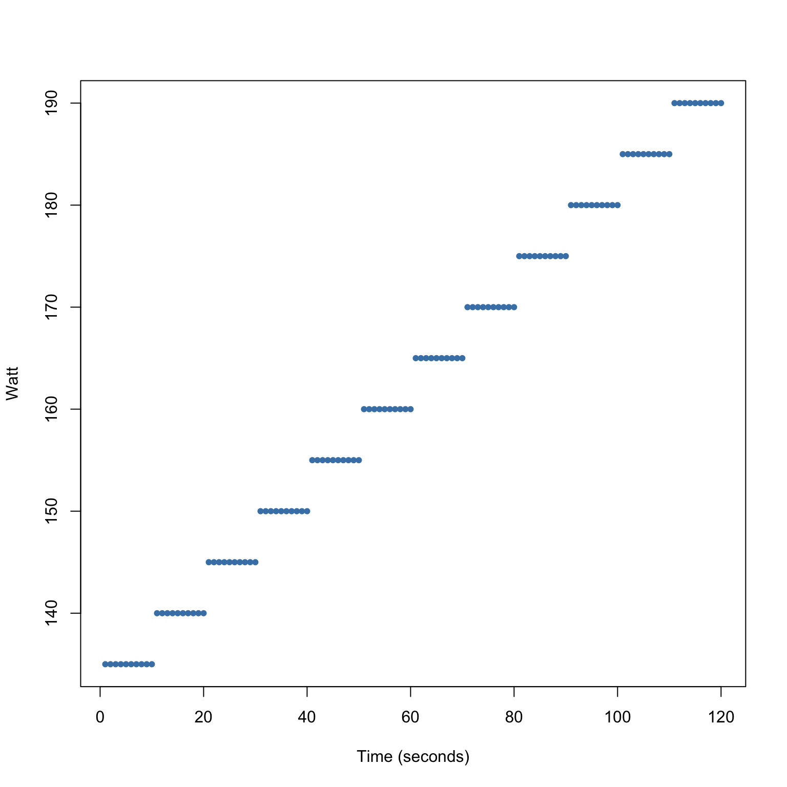
Scatter Plots
We can change the strategy and still maintain the same average.
Consider the following strategy:
- get a 160 watt average in a 2 minute interval
- have a longer period of 160 watts
Scatter Plots
We can change the strategy and still maintain the same average.
Consider the following strategy:
- get a 160 watt average in a 2 minute interval
- have a longer period of 160 watts
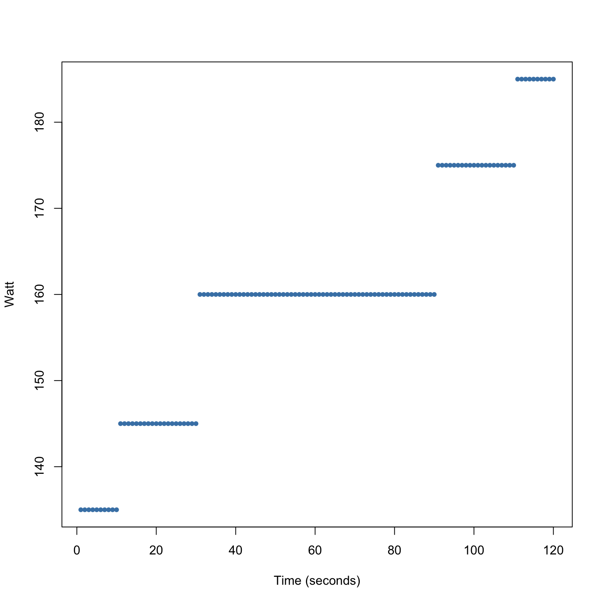
Scatter Plots
We can change the strategy and still maintain the same average.
Consider the following strategy:
- get a 160 watt average in a 2 minute interval
- have a steady decrease every 10 seconds
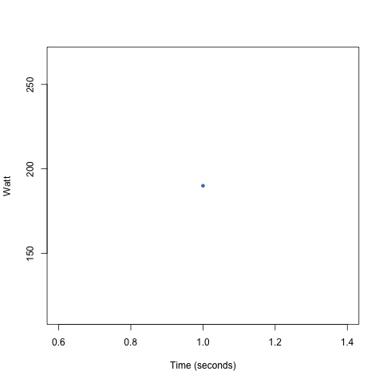
Scatter Plots
We can change the strategy and still maintain the same average.
Consider the following strategy:
- get a 160 watt average in a 2 minute interval
- have a steady decrease every 10 seconds
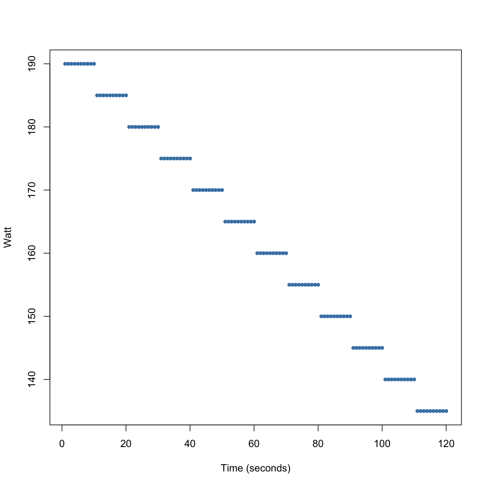
Example - Loan Interest Rates
A dot plot of the (rounded) loan interest rate data is shown below:
Example - Loan Interest Rates
A histogram is a plot that shows the distribution of data by grouping values into bins and displaying their frequencies as bars. A histogram of the loan interest rate data is shown below:
Mean of Loan Interest Rates
When working with data we often have a sample from a larger population.
- We can calculate the mean for the sample: \(\bar{x}\).
- But the mean of the entire population has a special label: \(\mu\).
Why don’t we always calculate \(\mu\)?
- Often not feasible to measure the population mean precisely.
- Instead, we estimate \(\mu\) using the sample mean \(\bar{x}\).
Loan Interest Rate Example
- From the sample of 50 loans, the mean interest rate is 11.57%.
Later we’ll explore how reliable \(\bar{x}\) is for estimating \(\mu\)!
Median - Loan Interest Rates
- The median is the value which divides the observations into two equal parts
The Median
- Description: the 50th percentile.
- Formula: order the values and find the middle value
Notation
- \(\tilde{x}^{(0.5)}\)
- \[ \tilde{x}^{(0.5)} = \begin{cases} x_{(n+1)/2},& \text{if n is odd}\\ \frac{1}{2}(x_{n/2} + x_{(n/2) + 1}), & \text{if n is even} \end{cases}\]
- Consider 10 interest rates from the loan data and calculate the median
[1] 11 10 26 10 9 10 17 6 8 13Median - Loan Interest Rates
- Recall the ECDF? It shows the proportion of data points less than or equal to each value. Let’s look at it for the interest rate data and get an idea of where the median is.
Quantiles
Quantiles are a generalization of the idea of the median
A quantile partitions the data into proportions
In general a (\(\alpha \times 100\))% - quantile (percentile) splits the data such that at least (\(\alpha \times 100\))% of the values are \(\leq\) the quantile value \(\tilde{x}^{(\alpha)}\).
\[ \tilde{x}^{(\alpha)} = \begin{cases} x_{(k)},& \text{if } n\alpha \text{ is not an integer}, \text{k = smallest integer > } n\alpha\\ \frac{1}{2}(x_{n\alpha} + x_{n\alpha + 1}), & \text{if } n\alpha \text{ is an integer} \end{cases} \]
Quantiles
- Let’s look at the ECDF for the interest rate data and get an idea of where the 80th percentile is.
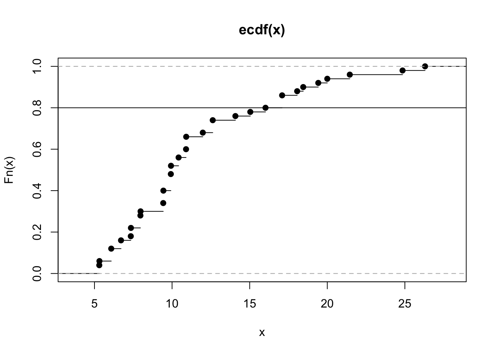
Measures of Dispersion - Range
The range is a measure of dispersion defined as the difference between the maximum and minimum value of the data.
The interquartile range is the difference between the 75% quantile (upper quartile) and 25% quantile (lower quartile).
- It covers the center of the data distribution and contains 50% of the observations.
\[d_{Q} = \tilde{x}^{(0.75)} - \tilde{x}^{(0.25)}\]
Boxplots
A boxplot is a graphical summary of data that shows its median, quartiles, spread, and potential outliers. Consider a boxplot of the interest rates.
Measures of Dispersion - Variance
Another measure of dispersion is the variance. The variance is one of the most important measures in statistics.
- This can be thought of as the mean of the squared errors
\[s^2 = \frac{1}{n-1}\sum_{i = 1}^{n}(x_i - \bar{x})^2\]
the variance of the interest rates in the loan dataset is 25.52
- the standard deviation, \(s\), is 5.05
Changing variances/standard deviations
Which histogram has s = 5, 10, 15, 20
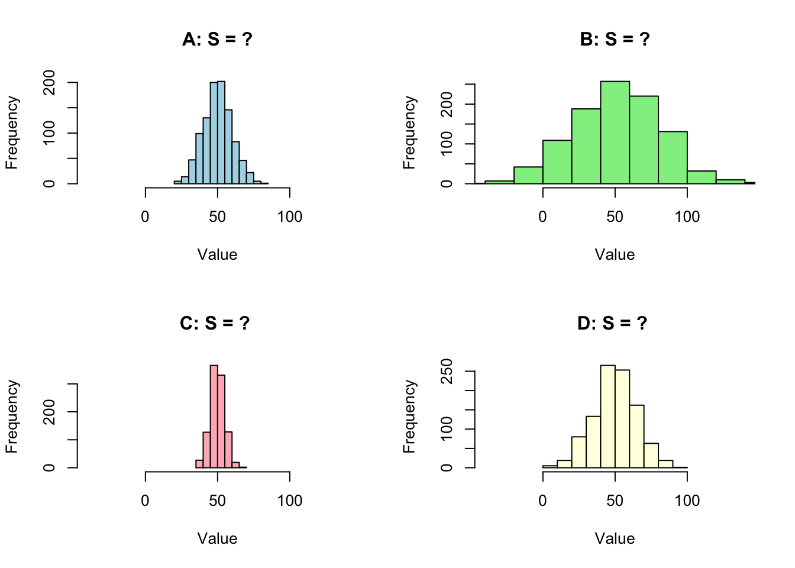
Changing variances/standard deviations
Which boxplot has s = 5, 10, 15, 20
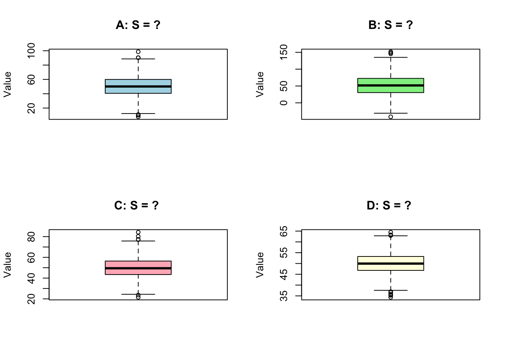
Robust statistics - Mean vs Median
- red = mean
- green = median
Robust statistics - Mean vs Median
- red = mean
- green = median
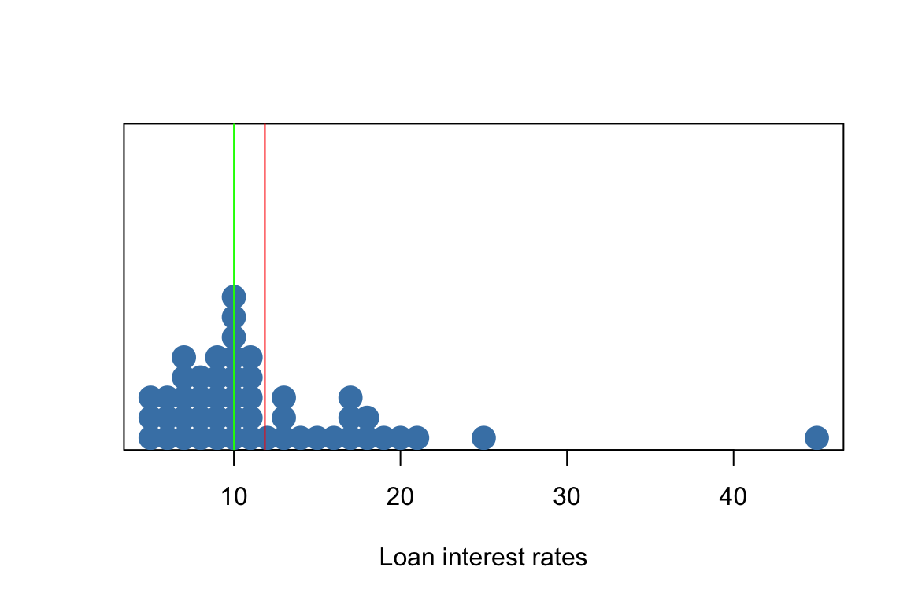
Scatterplots for paired data
A scatter plot is a chart that displays individual data points to show the relationship between two variables.
Scatterplots for paired data
Loan amount vs Income
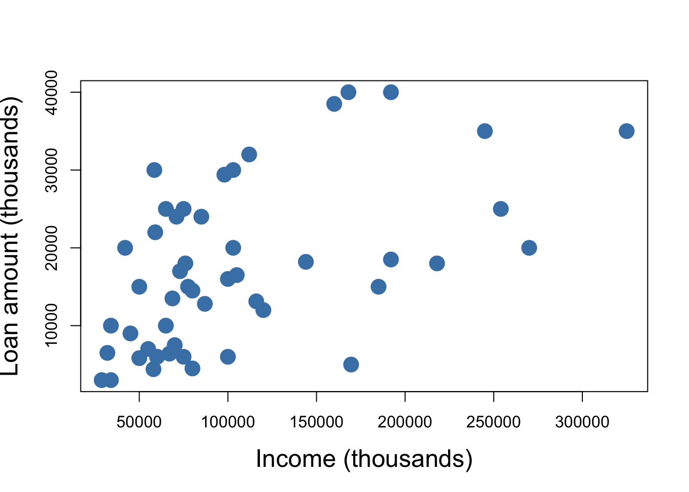
Scatterplots for paired data
Interest rates vs Income
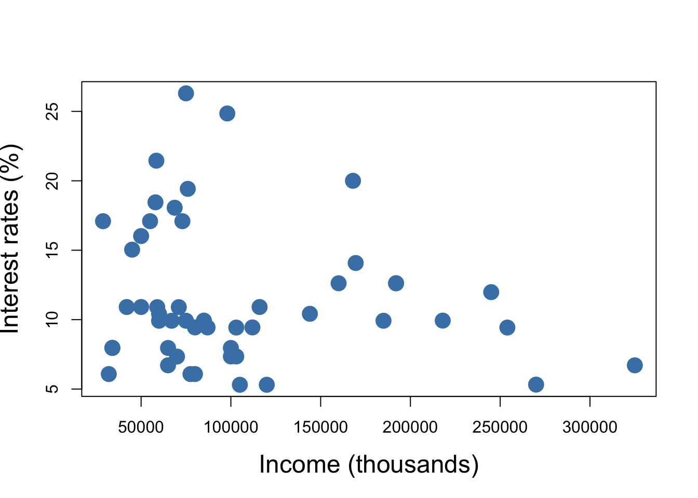